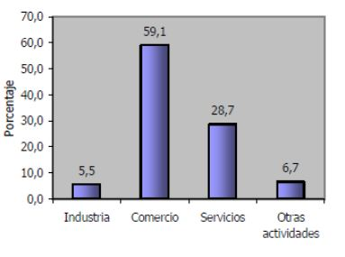
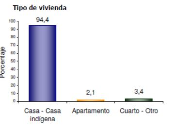
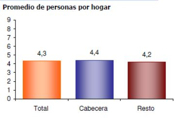

Estudio Socio-Económico
Situación demográfica de la población de Tumaco
Tumaco posee una población de 199.659 habitantes, con una cabecera municipal donde reside el 55.3% de la población. Tiene una población donde el 50% son hombres y el 50%, mujeres. El 88.8% de la población que reside en Tumaco se reconoce como negra, mulata, afrocolombiana o afrodescendiente y el 5.1% se auto reconoce como indígena. El resto no se auto reconoce en algún grupo étnico. El 16.3% de la población de 5 años y más, y el 17.1% de 15 años y más, no sabe leer ni escribir.
Situación demográfica de los cacaoteros
Tomando como referencia la vereda San Luis Robles, el 36% de los productores tienen edad que oscila entre 41 y 50 años, seguidos por el 21% de los productores cuya edades están entre 31 a 40 años, a este grupo se le suma los productores mayores de 50 años, los cuales representan el 19% del total , estos tres rangos de edades conforman el 76% de la población, mientras que el 15% y el 9% que comprenden edades entre los 21 a 30 años que actualmente se dedican a emplear su fuerza de trabajo en jornales, cultivos de uso ilícito y de otros productos; y entre los 10 a 20 años respectivamente, conforman el 24% de la población
La población de los cacaoteros se divide por genero según la Fig.4. Tradicionalmente, la actividad de cultivo ha sido realizada por el hombre ya que emplea una mayor capacidad de fuerza bruta y tiempo., en contraste, la mujer se ha dedicado a labores del hogar, al cuido, secado y comercialización del producto.
Ingresos y gastos económicos de la población tumaqueña
El 69% de las familias subsisten con un ingreso entre 100.000 pesos y un salario mínimo. El 25% de las familias, con un ingreso entre 1 y 3 salarios mínimos. Un 5% con un ingreso mayor a 3 salarios mínimos. En [6] se revela que las familias con más miembros, menos ingresos perciben, generando pobreza económica.
Los gastos de las familias están divididos en:
- Alimentos: 51% del ingreso mensual
- Vivienda: 21% del ingreso mensual
- Recreación: 11% del ingreso mensual
- Educación: 10% del ingreso mensual
- Vestido: 5% del ingreso mensual
- Salud: 2% del ingreso mensual
Sectores en los que se basan la economía de la región.
- Sector Agrícola
La economía de la región costera del Pacifico nariñense se basa principalmente en la agricultura y la agroindustria, la pesca, la actividad forestal y el turismo.
En el sector agrícola, Tumaco produce el 100% de la palma africana, el 92% del cacao y el 51% del coco de Nariño.
En los últimos años el sector agrícola se ha visto reducido considerablemente debido a la enfermedad en la Palma de aceite, Pudrición del Cogollo (PC), ocasionando la muerte de mas del 90% del cultivo (60 mil hectáreas) y, por ende, la quiebra de muchos agricultores y el traslado de cultivos. Lo anterior ha sido causado por las fumigaciones para exterminar los cultivos ilícitos, incrementando los índices de violencia y el trabajo informal
-
Sector empresarial
El sector empresarial por frecuencia de unidades económicas presenta la siguiente estructura: el 59% de las unidades está dedicada a comercio, el 28,7% a servicios, el 6,7% a otras actividades económicas y el 5,5% a la Industria (Según DANE, 2015). De acuerdo con el Censo Económico de Tumaco la distribución de establecimientos presenta la siguiente distribución: sector comercial 63,0%, sector de servicios 28,9% y sector industrial 8,2% (Cámara de Comercio de Tumaco, 2014)
En el comercio predomina el comercio al por menor, distribuyéndose así:
- Venta de alimentos y bebidas: 69%
- Mantenimiento de vehículos: 12%
- Venta de ropa y accesorios: 13%
- Venta de artículos usados: 7%
-
En el sector servicios se agrupan:
- Alimentos: 36.9%
- Salud: 21.06%
- Transporte: 11.9%
- Comunicación: 11.9%
- Educación: 9%
- Construcción: 8.6%
-
El sector industrial se distribuye porcentualmente en los siguientes subsectores:
- Alimentos, bebidas y tabaco: 49%
- Fabricación de productos a base de madera: 32%
- Maquinaria y equipo eléctrico: 7.4%
- Textiles: 4.1%
- Vehículos, transporte: 3.3%
- Químicos, caucho y plástico: 3.3%
- Minerales y metales: 0.8%
-
En el subsector de alimentos, bebidas y tabaco, el 51.67% concentran la elaboración de bebidas fermentadas no destiladas.
Fig. 4. Establecimientos según actividad económica. [1]
Vivienda e Infraestructura en Tumaco
-
Infraestructura de Tumaco
- Infraestructura Vial:
Tumaco cuenta con la vía departamental que lo comunica con la capital del departamento San Juan de Pasto. Esta vía posee una longitud de 300 kilómetros, y se encuentra pavimentada. Tumaco cuenta con 16 vías terciarias, con una longitud de 94 km.
-
Zona portuaria:
La zona portuaria de Tumaco es considerada la segunda más importante sobre las costas del Pacífico en Colombia después del puerto de Buenaventura. Esta es netamente exportadora de productos y principalmente materias primas colombianas, dado que la empresa que más lo utiliza es Ecopetrol, que en 2012 transportó 1.167.796,63 toneladas según el Ministerio de Transporte. Según cifras del DIAN, en 2013 las exportaciones de petróleo crudo alcanzaron los U$928.400.000, el aceite de palma africana U$9.734.226 y el atún entero congelado U$8.045.375. Actualmente, el terminal marítimo cuenta con capacidad para un mayor tráfico de comercio exterior.
-
Transporte aéreo:
El municipio cuenta con el aeropuerto La Florida, ubicado a cuatro kilómetros de la zona céntrica del municipio. Cuenta con capacidad para aeronaves medianas como Boeing 737. Durante el año 2012, el aeropuerto transportó 62,729 pasajeros nacionales, 0,19 % del total de pasajeros transportados en los aeropuertos del país; sin embargo, transporto 29 más pasajeros que el aeropuerto de Buenaventura que solo transporto al 0,03%. Respecto al transporte de carga, durante el año 2012 el aeropuerto transporto 571 toneladas, 6,7% más que en el año 2011 (Aeronáutica Civil, 2012).
- Infraestructura Vial:
-
Vivienda
Los tipos de viviendas de la población tumaqueña se distribuye en:
- Casa – Casa indígena: 94.4%
- Apartamento: 2.1%
- Tienda u otro: 3.4%
Fig.6. Tipo de vivienda. [1]Estas viviendas son construidas en su mayoría con materiales no adecuados, entre los que se incluyen plástico y zinc para los techos, madera blanda y dura para las paredes y exteriores y, madera, arena y tierra para el piso
La distribución de las personas por hogar se encuentra en la Fig. 6.
Fig.6. Promedio de personas por hogar [1] -
Servicios públicos
- Acueducto:
A diciembre de 2014, la Empresa de Acueducto, Alcantarillado y Aseo de Colombia S.A. E.S.P. contaba con 18.537 suscriptores de los cuales el 90,9% pertenecen al sector residencial. En el sector no residencial 1.610 suscriptores son del sector comercial, 62 del sector oficial y 21 del sector industrial, según SUI.
- Energía:
De acuerdo con cifras del SUI 2015, Centrales Eléctricas de Nariño S.A. E.S.P. es la empresa de energía eléctrica que provee el mayor suministro energético de Tumaco para los diferentes sectores de consumo, cuentan con 56.830 suscriptores. El sector residencial reúne los estratos socioeconómicos uno a cuatro y concentra el 98,0% de los suscriptores. Por otro lado, el no residencial cuenta con 1.139 suscriptores, de los cuales un 80,3% pertenecen al sector comercial, un 4,7% al sector industrial y un 11,6 % al sector oficial.
- Alcantarillado:
No se registran datos sobre suscriptores al servicio de alcantarillado, según SUI.
-
Aseo:
Al cierre de 2014, el SUI reportó para Tumaco 19.694 suscriptores al servicio de aseo, de los cuales el 90,1% corresponden al sector residencial en donde los estratos uno y dos cubren un 94,3% de la demanda. Por otro lado, en el sector no residencial concentra a 1.945
- Acueducto:
Pobreza en la población tumaqueña
La línea de pobreza en Tumaco es de 56.2%, siendo más alto que la línea de pobreza departamental, que es del orden del 53.2%. Y, se repite con la línea de Miseria (o extrema pobreza), que es del orden del 24.1% en Tumaco, frente al 26.77% del orden departamental. Los indicadores de Necesidades básicas insatisfechas NBI en Pasto es del orden del 26.2%, y en Tumaco es del orden del 56.2%.
La distribución de hombres y mujeres en extrema pobreza de la zona urbana del municipio de Tumaco es heterogénea con un porcentaje de 46% y 54%, respectivamente. El porcentaje de cada estado civil de esta población se distribuye así:
- Unión libre: 39%
- Soltero(a): 24%
- Separado: 21%
- Viudo(a): 11%
- Casado(a): 5%
- Divorciado(a): 0%
La composición del hogar de familias en extrema pobreza, correspondiente a la cantidad de integrantes que hacen parte de este, en su mayoría es de 7 integrantes (27%), seguido de 5 y 6 integrantes (23% y 21%, respectivamente); luego, por 4 integrantes (12%). El resto está distribuido por familias conformadas por 1,2,3, 8 o más de 8 integrantes.
La distribución de las edades de la población en extrema pobreza de la zona urbana de Tumaco se encuentra en la siguiente tabla:
| Edad | Porcentaje |
|---|---|
| 0 a 6 años | 18% |
| 7 a 14 años | 19% |
| 15 a 17 años | 11% |
| 18 a 26 años | 14% |
| 27 a 64 años | 31% |
| 65 en adelante | 7% |
Educación
El nivel educativo de la población tumaqueña se encuentra en la Fig.8 y la tasa de analfabetismo en la Fig.8.
Situación educativa de los cacaoteros
Según [7], el 59% de los productores saben leer y escribir, mientras que el 41% son analfabetas. Estos datos tienen similitud con la población en general, donde le 40% de los adultos de Tumaco son analfabeta.
La Fig.9 muestra el grado de escolaridad de los cacaoteros de la vereda San Luis Robles.
Referencias
- DANE. (2005). Censo General 2005. Tumaco-Nariño.
- Cámara de Comercio de Tumaco. (2014). Censo Económico Tumaco Nariño. Tumaco.
- Cámara de Comercio. (Septiembre de 2013). Horario de trabajo.
- DANE. (Junio de 2011). Censos y demografía. Proyecciones de población: http://www.dane.gov.co/files/investigaciones/poblacion/proyepobla06_20/VisorCertificaPPO_Oct11.xls
- Cámara de comercio de Tumaco: Diagnostico Regional (2015)
- Edwar E. Escobar. Análisis socio económico de la población en extrema pobreza acogida por la estrategia unidos, agencia presidencial para la acción social y la cooperación internacional, ubicada en el casco urbano del municipio de Tumaco. (2011)
- Ivan E. Calzada. Situación socioeconómica de los cacaoteros en la vereda de San Luis Robles, municipio de San Andrés de Tumaco (2011)